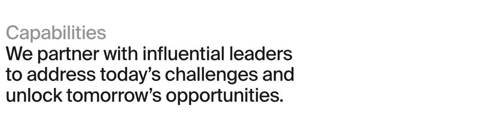
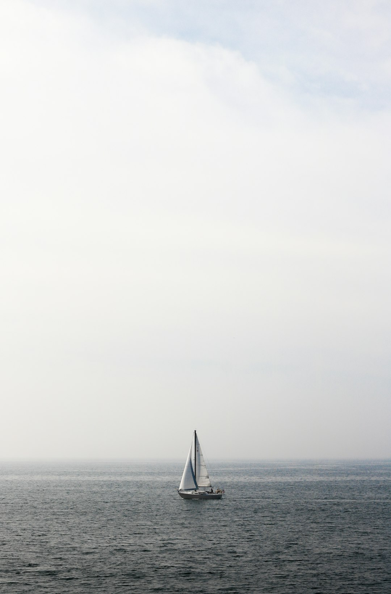
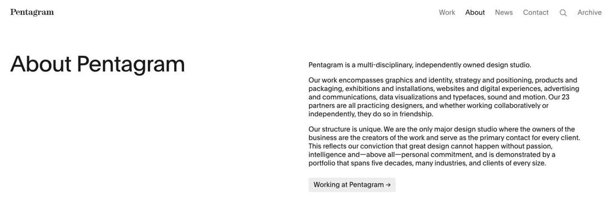
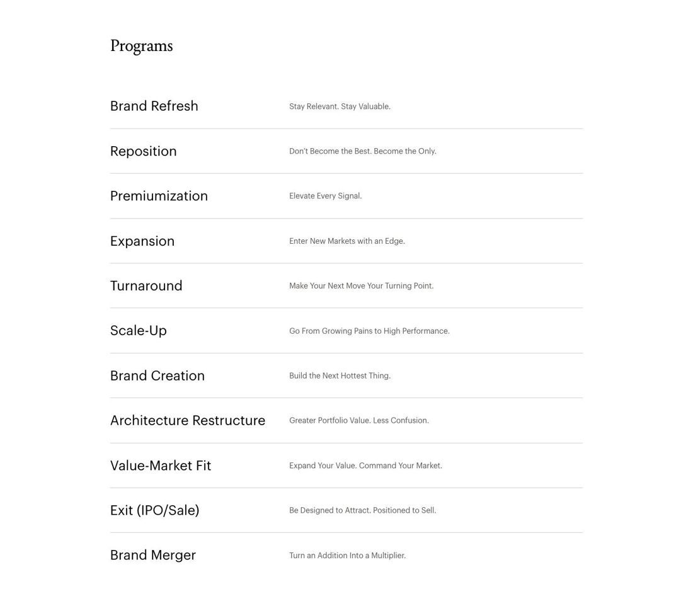
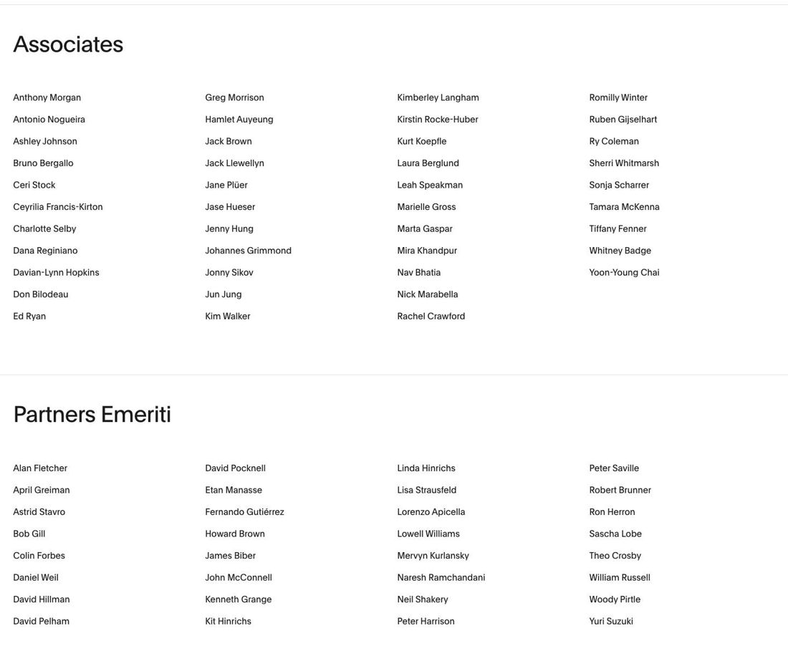
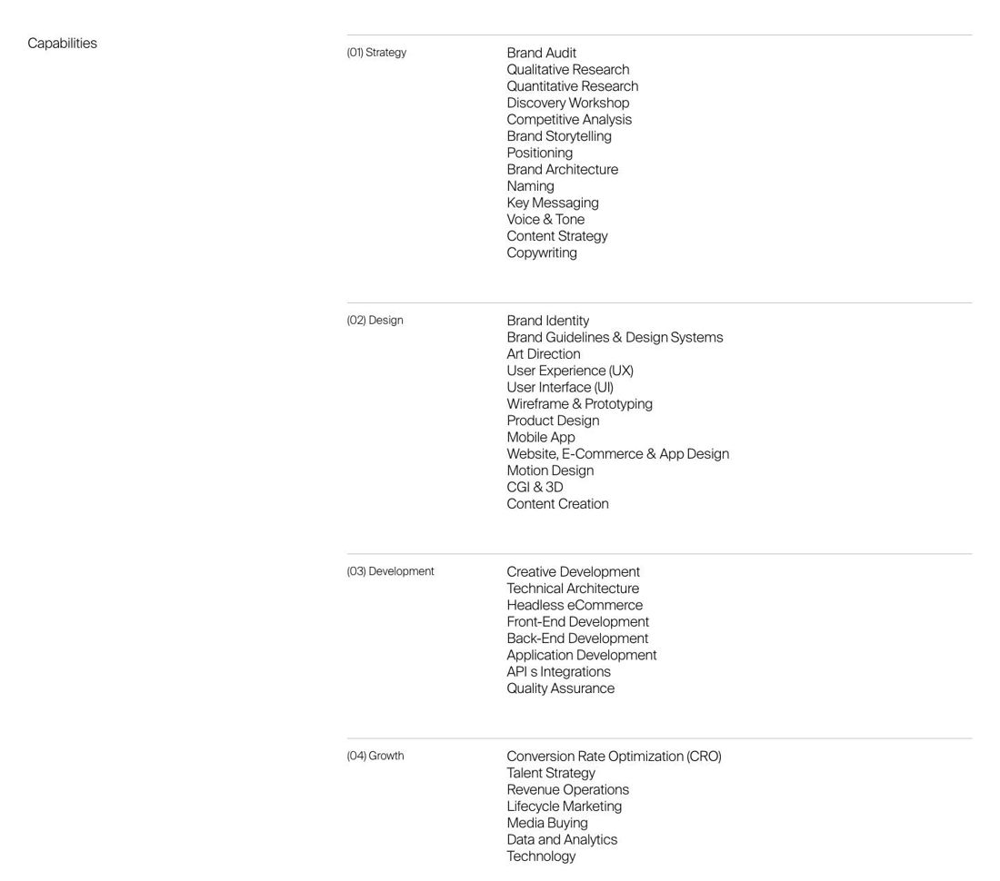
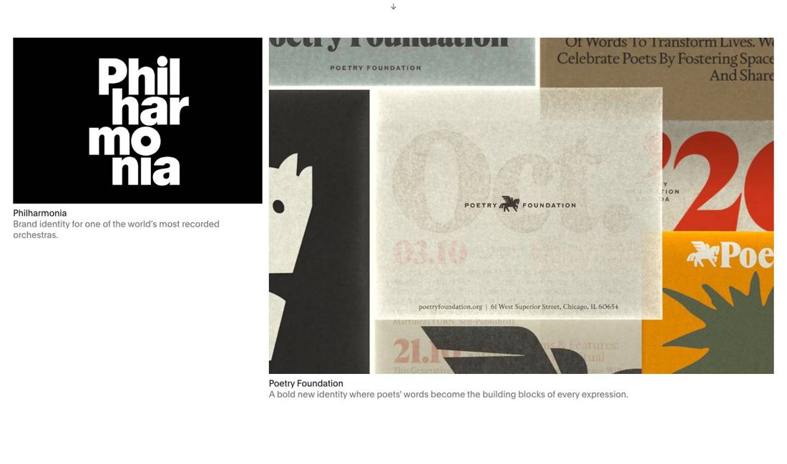
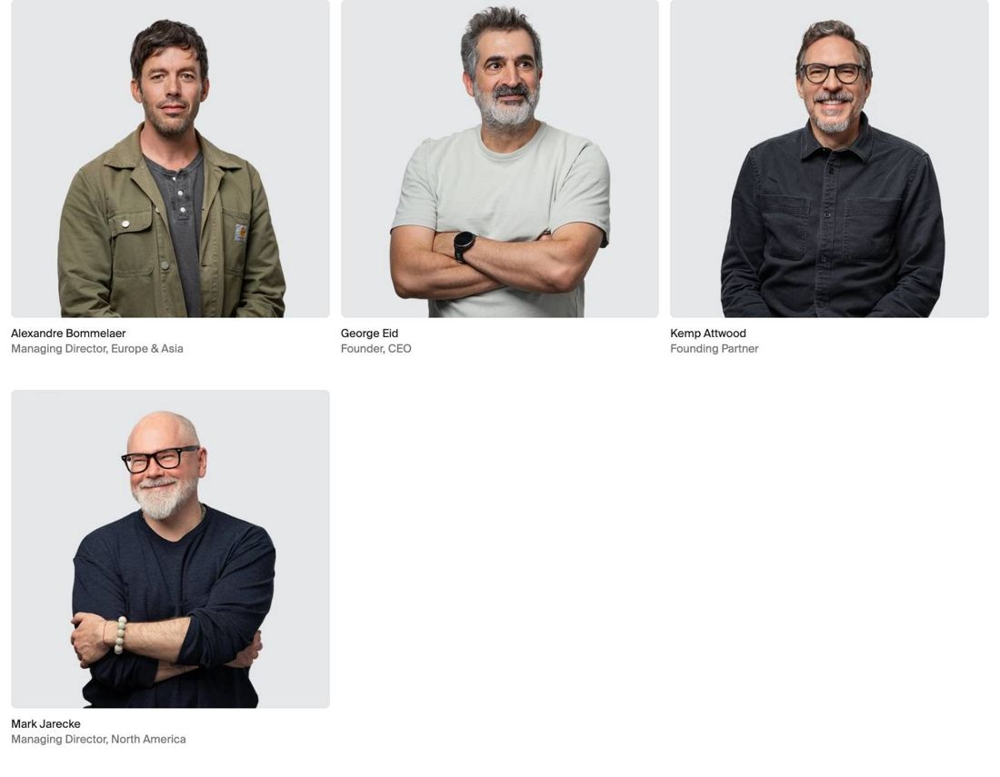

01FV（ページの入口）共通部品：/marketing-support・/newbusiness-pmo・/indonesia-offshore で同じ作り（見出し・写真だけ出し分け）
1文字だけ。生成りの中央に、明朝の一文参考：Collins のFV（中央の一文）
 Collins のFV（中央の一文）
Collins のFV（中央の一文）Collins：地の中央に、セリフ体の一文だけを小さく品よく置き、周りを大きく空ける。
→ 地は生成りに変更。見出し「品質は日本、開発はインドネシア」を明朝で中央に、説明文はその下に小さく。水色はラベル頭の点だけ。
Offshore — Japan / Indonesia
品質は日本、開発はインドネシア
多言語対応可能な日本のメンバーが要件定義から進行管理までを担当し、言語や文化のギャップを最小限に抑えながら、高品質かつスピード感のある開発を、優れたコストパフォーマンスでご提供します。
2白地。左に大きな見出し、右に副題。下に横長の写真1枚参考：AREA 17 Capabilities の見出し ／ AREA 17 の名前＋写真

AREA 17 Capabilities の見出し AREA 17 の名前＋写真
AREA 17 の名前＋写真AREA 17：白地に大きな文章と小さなラベル、写真は1枚を大きく。
→ 見出しと副題を上に並べ、その下に自然光の写真を横長で1枚。動きは出てくる時のフェードだけ。
生成してほしい写真：明るい午前の光が入る白い壁の部屋。明るい木の長い机の両端に、開いたノートPC（画面は白く飛んでいる）と陶器のマグカップが1組ずつ、向かい合わせに置かれている。窓の外に熱帯の植物の緑（バナナやヤシの葉）がやわらかくぼけて見える。人は写さない。白・生成り・明るい木・淡い灰色だけの落ち着いた色。明るい自然光、寒色の色かぶりなし。機械やロボット、SF的な演出なし。人の顔は写さない。文字やロゴは入れない（紙や画面の文字も読めない）。余白の多い構図、自然な色の写真、横長 3:2。
（いまは仮に「海と帆船の写真（本番の既存写真）」）
Offshore — Japan / Indonesia
品質は日本、開発はインドネシア
多言語対応可能な日本のメンバーが要件定義から進行管理までを担当し、言語や文化のギャップを最小限に抑えながら、高品質かつスピード感のある開発を、優れたコストパフォーマンスでご提供します。

3生成りの地を左右に分け、左に文字・右に縦長の写真参考：Pentagram About の見出しと文

Pentagram About の見出しと文Pentagram：左に見出し、右に本文。余白が広く、線も色も使わない。
→ 右側を写真に置き換え、左は見出しと副題だけ。写真は案2と同じ依頼文の1枚を縦に切り抜いて使う。
Offshore — Japan / Indonesia
品質は日本、開発はインドネシア
多言語対応可能な日本のメンバーが要件定義から進行管理までを担当し、言語や文化のギャップを最小限に抑えながら、高品質かつスピード感のある開発を、優れたコストパフォーマンスでご提供します。
02特徴共通部品：/marketing-support・/newbusiness-pmo・/indonesia-offshore で同じ作り（見出し・写真だけ出し分け）
1白地に3行。番号・見出し・本文を細い線で区切るだけ参考：Collins About「Programs」の一覧 ／ AREA 17 の原則の行

Collins About「Programs」の一覧 AREA 17 の原則の行
AREA 17 の原則の行Collins の Programs：名前と短い説明を細い線の行で並べる。AREA 17：左に見出し、右に説明。
→ 本番の「1.」「2.」「3.」を小さく左に置き、見出しと本文を2列に。
1.コミュニケーション
日英バイリンガルと、英語・インドネシア語バイリンガルのメンバーが複数在籍。クライアント様とのコミュニケーションはすべて日本語で対応しながら、インドネシアメンバーにもスムーズに連携します。
2.事業理解
お客様の事業の理解度、顧客への解像度により、開発における機能要件定義などアウトプットは大きくことなると考えており、開発目的の理解を前提とした提案・実装を行います。
3.誠実・実直
ミッションに掲げている「パイの最大化」における「利他と利己は中長期で一致していく」との思想に基づき、お客様の事業を自分事として捉え、拡大に貢献できるよう尽力します。
2生成りの地に3列。大きな細い数字と短い水色の線参考：Pentagram About の名簿（文字だけの列）

Pentagram About の名簿（文字だけの列）Pentagram：名簿を文字だけの列で静かに並べる。
→ 3つの特徴を3列にし、細字の大きな番号の下に水色の短い線を1本。写真も図も使わない。
1.コミュニケーション
日英バイリンガルと、英語・インドネシア語バイリンガルのメンバーが複数在籍。クライアント様とのコミュニケーションはすべて日本語で対応しながら、インドネシアメンバーにもスムーズに連携します。
2.事業理解
お客様の事業の理解度、顧客への解像度により、開発における機能要件定義などアウトプットは大きくことなると考えており、開発目的の理解を前提とした提案・実装を行います。
3.誠実・実直
ミッションに掲げている「パイの最大化」における「利他と利己は中長期で一致していく」との思想に基づき、お客様の事業を自分事として捉え、拡大に貢献できるよう尽力します。
3左に大きな番号、右の文を読むと番号だけ差し替わる参考：Rejouice Services「Classic」
 Rejouice Services「Classic」
Rejouice Services「Classic」Rejouice：画面いっぱいの1語と、短い文。
→ 細字の大きな番号（本番の「1.」）を左に置き、読み進めると 1.→2.→3. と静かに切り替わる。白地・灰色と黒だけ。
1.コミュニケーション
日英バイリンガルと、英語・インドネシア語バイリンガルのメンバーが複数在籍。クライアント様とのコミュニケーションはすべて日本語で対応しながら、インドネシアメンバーにもスムーズに連携します。
2.事業理解
お客様の事業の理解度、顧客への解像度により、開発における機能要件定義などアウトプットは大きくことなると考えており、開発目的の理解を前提とした提案・実装を行います。
3.誠実・実直
ミッションに掲げている「パイの最大化」における「利他と利己は中長期で一致していく」との思想に基づき、お客様の事業を自分事として捉え、拡大に貢献できるよう尽力します。
03業務フロー（7工程）導入プロセスと同じ部品を7工程に広げたもの
1白地に1本の黒い線と点。下に工程を横に並べる参考：AREA 17 の原則の行
AREA 17 の原則の行 AREA 17：細い線だけで区切った静かな並び。
→ 線の上の点で順番を示し、最初の点だけ水色。光が走るような動きはなし。7工程は名前だけを7列に、最後の一文は太字で、「最短」の下に水色の線。
ツールの開発目的（ユーザーの目的・課題とツールの提供価値）のヒアリングに基づき、必要機能と開発要件の整理を行った上で、デザインレビューからリリースまで適宜進捗報告しながら進行いたします。
01
要件ヒヤリング
02
要件定義
03
デザイン制作
04
開発・実装
05
テスト
06
リリース
07
ブラッシュアップ
最短1か月30万円～で対応いたしますので、まずはお気軽にご相談ください
2左に見出し、右に番号と工程の行（線で区切る）参考：ustwo Services の行
 ustwo Services の行
ustwo Services の行ustwo：左に見出し、右に説明を行で積む。
→ 番号は細字で大きめ、見出しと本文は素直に。左の見出しはスクロール中も残る。
ツールの開発目的（ユーザーの目的・課題とツールの提供価値）のヒアリングに基づき、必要機能と開発要件の整理を行った上で、デザインレビューからリリースまで適宜進捗報告しながら進行いたします。
01
要件ヒヤリング
02
要件定義
03
デザイン制作
04
開発・実装
05
テスト
06
リリース
07
ブラッシュアップ
最短1か月30万円～で対応いたしますので、まずはお気軽にご相談ください
3生成りの地に白いカードを並べる参考：AREA 17 の事例カードの列
 AREA 17 の事例カードの列
AREA 17 の事例カードの列AREA 17：淡い色のカードを横に並べ、上に短い題、下に名前。
→ 工程ごとに白いカード（番号・工程名・説明）。7工程は7枚（スマホは2列）。
ツールの開発目的（ユーザーの目的・課題とツールの提供価値）のヒアリングに基づき、必要機能と開発要件の整理を行った上で、デザインレビューからリリースまで適宜進捗報告しながら進行いたします。
01
要件ヒヤリング
02
要件定義
03
デザイン制作
04
開発・実装
05
テスト
06
リリース
07
ブラッシュアップ
最短1か月30万円～で対応いたしますので、まずはお気軽にご相談ください
04対応可能な技術スタック共通部品：/newbusiness-pmo・/indonesia-offshore で同じ作り（本番の文も同じ）
1白地の表。左に分類、右にアイコンと名前参考：Rejouice Services「Capabilities」

Rejouice Services「Capabilities」Rejouice：左に分類、右に項目を並べた表。
→ 本番のアイコンと名前を3列で。
フロントエンド
React.js Next.js
Next.js ViteHTMLCSS
ViteHTMLCSS SASS
SASS バックエンド
JavaScriptTypeScript Node.jsExpress.js
Node.jsExpress.js PythonFastAPI
PythonFastAPI 2生成りの地に白い小さなタイル参考：AREA 17 の事例カードの列
AREA 17 の事例カードの列 AREA 17：淡いカードを並べる。
→ 分類ごとに白いタイル（アイコン＋名前）を6列で。
フロントエンド
React.js
Next.js Vite HTML
CSS
SASS バックエンド
JavaScript
TypeScript
Node.js Express.js
Python FastAPI
3白地。文字だけの3列参考：Pentagram About の名簿（文字だけの列）
Pentagram About の名簿（文字だけの列）
Pentagram：名簿を文字だけの列で並べる。
→ アイコンを外し、分類の下に技術名を大きめの文字で。いちばん静か。
フロントエンド
- React.js
- Next.js
- Vite
- HTML
- CSS
- SASS
バックエンド
- JavaScript
- TypeScript
- Node.js
- Express.js
- Python
- FastAPI
インフラ
- MySQL
- PostgreSQL
- Prisma
- Solana
- Docker
05開発事例共通部品：/newbusiness-pmo・/indonesia-offshore で同じ作り（本番の文も同じ）
1白地の表。題名の行の下に、画像・説明・使用技術参考：Rejouice Services の表
 Rejouice Services の表
Rejouice Services の表Rejouice：見出しの行の下に数字を並べた表。
→ 黒い帯はやめ、細い線1本で区切る。
webツール / SaaS
獲得型動画広告をLPから5分で制作
売れる動画広告をLPから5分で制作。 検証から成果改善まで、動画広告のPDCAに必要な機能を1ツールで網羅します
使用技術:
Next.js, React, Python, FastAPI, PosgreSQL
webツール / SaaS
LINEミニアプリ
企業・店舗がLINE上で提供できるウェブアプリケーション
使用技術:
AWS Lambda Function, AWS DynamoDB, Next.js, React
2生成りの地に2枚のカード。上に画像、下に文参考：Pentagram の作品の格子

Pentagram の作品の格子Pentagram：画像の下に、題名と短い説明を小さく添える格子。
→ 2件を2列で。画像は白い台の上に素直に置く（枠や端末の飾りなし）。
webツール / SaaS獲得型動画広告をLPから5分で制作
売れる動画広告をLPから5分で制作。 検証から成果改善まで、動画広告のPDCAに必要な機能を1ツールで網羅します
使用技術:
Next.js, React, Python, FastAPI, PosgreSQL
webツール / SaaSLINEミニアプリ
企業・店舗がLINE上で提供できるウェブアプリケーション
使用技術:
AWS Lambda Function, AWS DynamoDB, Next.js, React
3白地。大きな画像と文を左右交互に参考：Monterail の事例の行 ／ AREA 17 Capabilities の行
 Monterail の事例の行
Monterail の事例の行 AREA 17 Capabilities の行
AREA 17 Capabilities の行Monterail：事例ごとに画像と文を左右に。AREA 17：画像を大きく。
→ 1件ずつ、画像を大きめに。
webツール / SaaS獲得型動画広告をLPから5分で制作
売れる動画広告をLPから5分で制作。 検証から成果改善まで、動画広告のPDCAに必要な機能を1ツールで網羅します
使用技術:
Next.js, React, Python, FastAPI, PosgreSQL
webツール / SaaSLINEミニアプリ
企業・店舗がLINE上で提供できるウェブアプリケーション
使用技術:
AWS Lambda Function, AWS DynamoDB, Next.js, React
06メンバー共通部品：/marketing-support・/newbusiness-pmo・/indonesia-offshore で同じ作り（見出し・写真だけ出し分け）（marketing は2人・見出しなし）
1生成りの地に白いカード（トップの MEMBER と同じ）参考：AREA 17 Culture の顔写真

AREA 17 Culture の顔写真AREA 17：同じ大きさの顔写真を並べ、下に名前と肩書き。
→ トップの MEMBER と同じカード。写真は本番のまま自然な色（白黒にしない）。「日本メンバー」等の見出しは本番の文。
日本メンバー
橋本 圭司 - 代表取締役
大手通信会社の営業、事業企画、およびWebコンサル会社での経験を生かし、様々な業種・規模の企業でBizDev・マーケティングのコンサルとして事業を推進。アートスタートアップCMOを経て現職。
上水流 弘一 - プロジェクトマネージャー
福岡在住。Web開発会社の経営と並行して、現役のフルスタックエンジニアとしても活動。小規模から中規模まで、事業フェーズに応じた柔軟なシステム設計を得意とする。技術と対話を通じて事業の課題解決に取り組んでいる。
林 壮 - プロジェクトマネージャー
東京生まれ、イギリス・シンガポール育ち。
映像ディレクターの経験を持ち、現在は弊社のオフショア開発事業と動画制作事業に加え、採用担当も務める。
オフショア開発メンバー
Satrio Buwono - エンジニア統括
主な開発領域：
・UI/UXデザイン
・インタラクション実装
・SPA開発
・データベース設計と管理
使用言語：JavaScript, TypeScript, Solana, Docker
Ahmad Maulana Hafiz - フルスタックエンジニア
主な開発領域：
・UI/UXデザイン
・インタラクション実装
・SPA開発
使用言語：HTML,CSS & SASS,JavaScript,TypeScript
2白地。小さな写真・名前・紹介文を1行ずつ参考：Pentagram About の見出しと文
Pentagram About の見出しと文
Pentagram：左に見出し、右に文の2段組。
→ 1人1行で、左から小さな写真・名前と肩書き・紹介文。名簿のように読みやすく。
日本メンバー

大手通信会社の営業、事業企画、およびWebコンサル会社での経験を生かし、様々な業種・規模の企業でBizDev・マーケティングのコンサルとして事業を推進。アートスタートアップCMOを経て現職。

福岡在住。Web開発会社の経営と並行して、現役のフルスタックエンジニアとしても活動。小規模から中規模まで、事業フェーズに応じた柔軟なシステム設計を得意とする。技術と対話を通じて事業の課題解決に取り組んでいる。

東京生まれ、イギリス・シンガポール育ち。
映像ディレクターの経験を持ち、現在は弊社のオフショア開発事業と動画制作事業に加え、採用担当も務める。
オフショア開発メンバー
主な開発領域：
・UI/UXデザイン
・インタラクション実装
・SPA開発
・データベース設計と管理
使用言語：JavaScript, TypeScript, Solana, Docker

Ahmad Maulana Hafiz - フルスタックエンジニア
主な開発領域：
・UI/UXデザイン
・インタラクション実装
・SPA開発
使用言語：HTML,CSS & SASS,JavaScript,TypeScript
3拠点ごとの2列。列の頭に現地の時刻を小さく参考：BUCK About の拠点と時刻
 BUCK About の拠点と時刻
BUCK About の拠点と時刻BUCK：拠点名と現地時刻を並べる。
→ 日本メンバーの列に JST、オフショア開発メンバーの列に WIB の時刻（実際の時刻）。時計は小さく、色は黒だけ。マーケティング支援は日本の1列。
Japan--:--JST
日本メンバー
橋本 圭司 - 代表取締役
大手通信会社の営業、事業企画、およびWebコンサル会社での経験を生かし、様々な業種・規模の企業でBizDev・マーケティングのコンサルとして事業を推進。アートスタートアップCMOを経て現職。
上水流 弘一 - プロジェクトマネージャー
福岡在住。Web開発会社の経営と並行して、現役のフルスタックエンジニアとしても活動。小規模から中規模まで、事業フェーズに応じた柔軟なシステム設計を得意とする。技術と対話を通じて事業の課題解決に取り組んでいる。
林 壮 - プロジェクトマネージャー
東京生まれ、イギリス・シンガポール育ち。
映像ディレクターの経験を持ち、現在は弊社のオフショア開発事業と動画制作事業に加え、採用担当も務める。
Indonesia--:--WIB
オフショア開発メンバー
Satrio Buwono - エンジニア統括
主な開発領域：
・UI/UXデザイン
・インタラクション実装
・SPA開発
・データベース設計と管理
使用言語：JavaScript, TypeScript, Solana, Docker
Ahmad Maulana Hafiz - フルスタックエンジニア
主な開発領域：
・UI/UXデザイン
・インタラクション実装
・SPA開発
使用言語：HTML,CSS & SASS,JavaScript,TypeScript
 MySQL
MySQL PostgreSQL
PostgreSQL Solana
Solana Docker
Docker